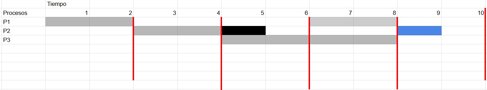
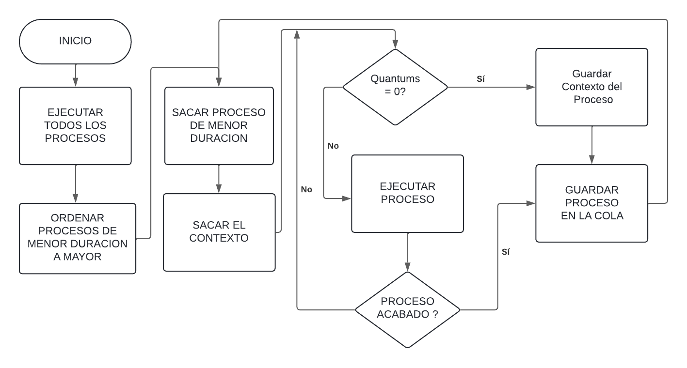
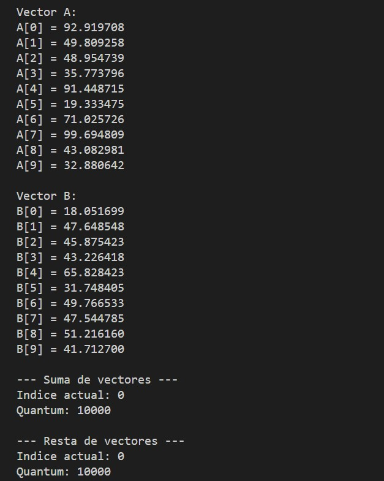
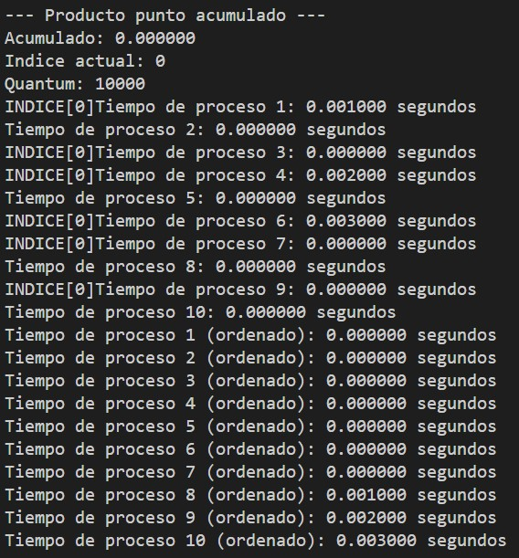
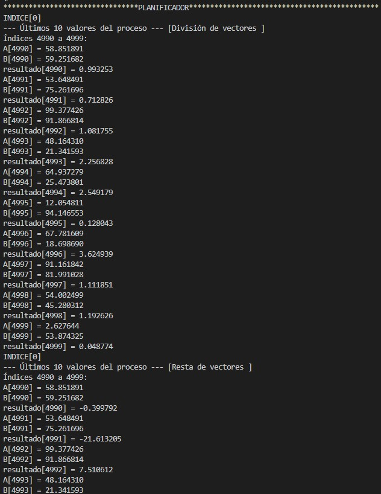

Objetivo
¿Qué se buscó entender?
Comprender el funcionamiento de los sistemas operativos a través de la simulación de un planificador específico, explorando su gestión de recursos, la política de selección de procesos y su operación interna — desde la medición de tiempos de ráfaga hasta el manejo de contextos interrumpidos.
Fundamento teórico
El Planificador SJF
El planificador (scheduler) es la función fundamental de un sistema operativo: debe decidir a qué proceso le cede los recursos del CPU cuando varios están listos para ejecutarse. Existen múltiples algoritmos de planificación; este proyecto se concentra en el Shortest Job First (SJF).
En SJF, el proceso con la menor duración estimada recibe prioridad de ejecución. Si dos procesos llegan al mismo tiempo, el de ráfaga más corta se ejecuta primero, minimizando el tiempo de espera promedio del sistema.


En el ejemplo anterior, el proceso P2 (menor duración) se ejecuta primero, seguido de P3, P4 y finalmente P1 — el de mayor carga. El resultado es una cola de espera mínima para los procesos cortos.
Planteamiento del problema
Más allá del SJF puro: quantums y context switching
El SJF clásico asume que los procesos corren hasta terminar. Para este proyecto se incorporaron dos modificaciones que acercan la simulación a un sistema operativo real:
- Quantums de tiempo — cada proceso tiene un tiempo máximo de CPU por turno. Si el proceso no termina dentro del quantum, se interrumpe y vuelve a la cola.
-
Salvaguarda de contexto — al interrumpir un proceso, su estado (registros,
variables de trabajo, índice de progreso) se almacena en un
stackpara ser restaurado en su próxima ejecución. - Re-inserción en cola FIFO — el proceso interrumpido regresa ordenado a la pila según su tiempo residual, manteniendo la política SJF.


Desarrollo
Implementación en C
El sistema opera sobre dos vectores de 1,000 elementos (A y B) y ejecuta diez operaciones matemáticas sobre ellos. Cada operación es un proceso independiente cuyo tiempo de ráfaga se mide antes del primer ciclo del planificador.
1 — Medición de tiempos de ráfaga
Antes de planificar, se ejecuta cada proceso una vez completo usando clock()
de time.h para registrar su duración real. Este tiempo determina el orden de ejecución.
for (int i = 0; i < 10; i++) {
start = clock();
procesos[i](A, B); // ejecutar sin quantum (medición pura)
end = clock();
tiempos[i] = ((double)(end - start)) / CLOCKS_PER_SEC;
}2 — Asignación de quantums
Las operaciones de convolución —las más costosas— reciben un quantum más amplio
(10 000 ciclos) para no dominar el planificador. El resto comparte un
valor uniforme configurable.
void asignar_quantums(int quantum) {
datos.suma_vectores.quantum = quantum;
datos.resta_vectores.quantum = quantum;
datos.producto_vectores.quantum = quantum;
datos.division_vectores.quantum = quantum;
datos.distancia_euclidiana.quantum = quantum;
datos.producto_punto.quantum = quantum;
datos.energia_vector_A.quantum = quantum;
datos.energia_vector_B.quantum = quantum;
datos.convolucion_cuadrada.quantum = 10000; // mayor costo
datos.convolucion_triangular.quantum = 10000;
}3 — Cola FIFO y estructura de contexto
Se definió una estructura de pila FIFO para mantener el orden de ejecución y otra para almacenar el estado (context) de cada proceso interrumpido.
// Cola de procesos ordenados por tiempo de ráfaga
typedef struct {
Operacion funciones[10];
int inicio; // índice frontal FIFO
int final; // índice trasero FIFO
int tamano;
} Pila_Funciones;
// Estado por proceso (context switching)
typedef struct {
ProcesoEstado suma_vectores;
ProcesoEstado resta_vectores;
ProcesoEstado producto_vectores;
ProcesoEstado division_vectores;
ProcesoEstado distancia_euclidiana;
ProcesoEstado producto_punto;
ProcesoEstado convolucion_cuadrada;
ProcesoEstado convolucion_triangular;
ProcesoEstado energia_vector_A;
ProcesoEstado energia_vector_B;
} DatosProcesos;4 — Ciclo principal del planificador
El loop extrae el proceso al frente de la cola y lo ejecuta.
Si retorna 0 (quantum agotado, proceso incompleto), lo re-inserta con su contexto guardado.
Si retorna 1 (proceso finalizado), avanza al siguiente.
while (!esta_vacia(&pila)) {
Operacion f = sacar_funcion(&pila);
if (f != NULL) {
resultado = f(A, B); // retorna 0 si no terminó
if (resultado == 0) {
agregar_funcion(&pila, f); // vuelve a la cola
}
// si resultado == 1 → proceso terminado, no se re-inserta
}
}Ejecución
Capturas del Sistema
La simulación corre en tres fases visibles: inicialización de vectores y quantums, primera corrida para medir tiempos de ráfaga, y el bucle de planificación con rotación de procesos.

Inicialización: se crean los vectores A y B con valores aleatorios y se asignan los quantums a cada uno de los diez procesos.

Primera corrida: cada proceso se ejecuta completo una vez para medir su tiempo de ráfaga.
El resultado es un arreglo tiempos[] que determina el orden SJF.

Planificador activo: los procesos rotan respetando quantums. Cuando un proceso agota su quantum, guarda contexto y regresa a la cola. La consola muestra cada cambio de proceso en tiempo real.
Resultados experimentales
Tablas Comparativas
Los resultados verifican que el context switching funciona correctamente: los valores parciales (índice ~5000) y finales (índice ~10000) son consistentes con el cómputo continuo esperado para cada operación.
| Parámetro | Valor | Rango de índices |
|---|---|---|
| — Resultado parcial (quantum 1) | ||
| Energía B | 16,705,333 | 0 – 5000 |
| Producto Punto | 12,482,074 | 0 – 5000 |
| Energía A | 16,590,357 | 0 – 5000 |
| Distancia Euclidiana | 8,331,554 | 0 – 5000 |
| — Resultado final (quantum 2) | ||
| Energía B | 33,657,720 | 5001 – 10000 |
| Producto Punto | 25,014,198 | 5001 – 10000 |
| Energía A | 32,905,750 | 5001 – 10000 |
| Distancia Euclidiana | 4,066 | 5001 – 10000 |
| Índice (Q1) | Resultado | Índice (Q2) | Resultado |
|---|---|---|---|
| 4990 | −42.867 | 9990 | −36.806 |
| 4991 | −30.362 | 9991 | −33.176 |
| 4992 | 7.859 | 9992 | −2.737 |
| 4993 | −12.943 | 9993 | 30.724 |
| 4994 | −3.468 | 9994 | 88.383 |
| 4995 | 51.176 | 9995 | 15.633 |
| 4996 | −17.697 | 9996 | 40.621 |
| 4997 | −31.429 | 9997 | 10.316 |
| 4998 | −85.595 | 9998 | 11.848 |
| 4999 | −16.295 | 9999 | 24.445 |
| Índice (Q1) | Resultado | Índice (Q2) | Resultado |
|---|---|---|---|
| 4990 | 154.180 | 9990 | 57.386 |
| 4991 | 35.739 | 9991 | 96.787 |
| 4992 | 15.240 | 9992 | 130.720 |
| 4993 | 43.182 | 9993 | 150.141 |
| 4994 | 112.212 | 9994 | 93.718 |
| 4995 | 114.789 | 9995 | 100.253 |
| 4996 | 50.086 | 9996 | 158.161 |
| 4997 | 142.858 | 9997 | 41.990 |
| 4998 | 95.545 | 9998 | 139.583 |
| 4999 | 80.093 | 9999 | 127.004 |
| Índice (Q1) | Resultado | Índice (Q2) | Resultado |
|---|---|---|---|
| 4990 | 5,483.485 | 9990 | 484.599 |
| 4991 | 88.854 | 9991 | 2,066.762 |
| 4992 | 42.620 | 9992 | 4,270.047 |
| 4993 | 424.278 | 9993 | 5,399.571 |
| 4994 | 3,144.892 | 9994 | 242.887 |
| 4995 | 2,639.399 | 9995 | 2,451.581 |
| 4996 | 548.844 | 9996 | 5,841.200 |
| 4997 | 4,855.167 | 9997 | 414.189 |
| 4998 | 450.562 | 9998 | 4,835.771 |
| 4999 | 1,537.352 | 9999 | 3,883.098 |
| Índice (Q1) | Resultado | Índice (Q2) | Resultado |
|---|---|---|---|
| 4990 | 0.565 | 9990 | 0.218 |
| 4991 | 0.081 | 9991 | 0.489 |
| 4992 | 3.130 | 9992 | 0.959 |
| 4993 | 0.539 | 9993 | 1.515 |
| 4994 | 0.940 | 9994 | 34.132 |
| 4995 | 2.609 | 9995 | 1.369 |
| 4996 | 0.478 | 9996 | 1.691 |
| 4997 | 0.639 | 9997 | 1.651 |
| 4998 | 0.055 | 9998 | 1.186 |
| 4999 | 0.662 | 9999 | 1.477 |
Stack técnico
Tecnologías
Documentación Técnica
Implementación completa, análisis de rendimiento y código fuente en el reporte formal.